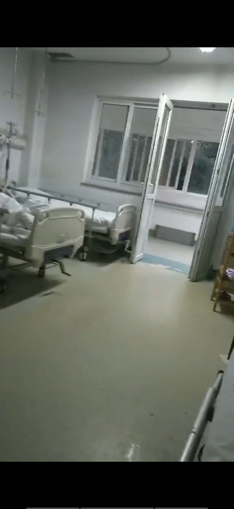

“病好了就想马上回家”|对话武汉肺炎当事人–专题-中国经营网
原文链接 备份链接 “病好了就想马上回家”|对话武汉肺炎当事人 2020-01-22 18:21 作者：陈婷 张家振 来源：中国经营网 本报记者 陈婷 张家振 武汉报道 截至1月22日，此前在华南海鲜市场打工的王伟（化名）已在武汉市金银潭 …
隔离病房中的除夕丨对话武汉肺炎病人
2020-01-24 22:06 作者：陈婷 曹学平 来源：中国经营网
本报记者 陈婷 曹学平 广州报道
1月24日，正值除夕。
在这个本该全家团圆吃年夜饭的日子，对于正在武汉市金银潭医院接受治疗的新型冠状病毒感染的肺炎患者王伟（化名）来说，今晚将与观察病房中的其他三位病友一起度过。
王伟对《中国经营报》记者说，除夕夜没能跟家人一起度过觉得有些许遗憾，但是从长远来看，还是觉得这样做有必要，毕竟回家之后若是使家人感染上病毒，自己也会非常后悔。
此外，因为担心同在武汉的姐姐王燕（化名）的个人安全，王伟今天没让姐姐给自己送饭。晚餐吃的是医院提供的盒饭，菜品有莴苣炒胡萝卜、鹌鹑蛋炒木耳、煎鱼排、炖鱼块、炆豆腐等。



照片均由受访者提供
王伟今年44岁，其生病前在武汉华南海鲜批发市场一家经营带鱼、黄鱼、鱿鱼等海鲜冻品的档口打工，每天凌晨4点钟上班，傍晚5点下班，主要工作是搬运冻品。
王燕此前告诉记者，王伟于2019年12月31日下午两点从华中科技大学同济医学院附属同济医院（以下简称“同济医院”）转入武汉市金银潭医院，入住该院住院部南四楼。王伟大概在2019年12月16日或17日开始出现发烧症状，在家里“挺了8天”之后，因持续高烧约40摄氏度才住进了武汉市第六医院。
彼时，王伟在武汉市第六医院以及同济医院住院治疗时，王燕还能一直在王伟身边进行照顾，直至王伟戴着呼吸机转院到武汉市金银潭医院，由于院方对病人和家属进行隔离，王燕就再也没见过弟弟，王伟也开始了独自一人照顾自己的治病时光。
1月17日，王伟被正式转入观察病房。现在的他，已经可以独自下楼打水，感觉身上渐渐有了力气。截至目前，王伟尚未接到出院通知，医生告诉他：“肝脏还有些问题，转氨酶很高，暂时不能出院。”
王燕和弟弟王伟一家是东北人，在武汉落地扎根了20余年。王伟和妻子育有一子，也在武汉打工，但没有同住一个屋檐下。王燕说，侄子在王伟生病前很少给王伟打电话，自从王伟生病住院后，便开始天天给王伟打电话。王伟曾对王燕说：“摊上这个事也值了，起码儿子懂事多啦！知道关心爸爸了。”
王伟也对记者称，现在儿子经常给自己打电话，有时候也会视频。王伟说：“孩子挺孝顺的，自己病好了之后想马上回家。”王燕则说，本来是打算回老家过春节的，但因为弟弟住院了，便取消了这个行程。
1月24日，王伟告诉记者，今晚就只准备在病房里观看春晚节目，与家人进行视频通话。据悉，2020年的春晚节目单开播前进行调整，特别增加了疫情防控节目《爱是桥梁》。
（编辑：曹学平 校对：彭玉凤）
* 除《中国经营报》署名文章外，其他文章为作者独立观点，不代表中国经营网立场。
* 未经本网授权，任何单位及个人不得转载、摘编或以其它方式使用上述作品，违者将被追究法律责任。
* 凡本网注明“来源：中国经营网” 或“来源：中国经营报-中国经营网”的所有作品，版权均属于中国经营网（本网另有声明的除外）。
* 如因作品内容、版权和其它问题需要同本网联系的，请在30日内进行。
* 有关作品版权事宜请联系：010-88890046 邮箱：banquan@cbnet.com.cn
原文链接 备份链接 “病好了就想马上回家”|对话武汉肺炎当事人 2020-01-22 18:21 作者：陈婷 张家振 来源：中国经营网 本报记者 陈婷 张家振 武汉报道 截至1月22日，此前在华南海鲜市场打工的王伟（化名）已在武汉市金银潭 …
原文链接 备份链接 作者 | 第一财经 吴绵强 周芳 陈益刊 编辑 | 张富贵 为了遏制新型冠状病毒感染的肺炎扩散，按照武汉市新型冠状病毒感染的肺炎疫情防控指挥部通告，自1月23日10时起，武汉全市城市公交、地铁、轮渡、长途客运暂停运营； …
原文链接 备份链接 文 | 王彦入 王丹妮 程静之 殷盛琳 李晓芳 周航 叶雯 曾宪雯 编辑 | 王珊 陶若谷 33岁的刘科戴上两层口罩独自走进地铁，夹杂在路人中间。像他这样拉着行李箱的人并不少见，彼此间默契地保持着距离。三天前，他刚刚从 …
原文链接 备份链接 ********** *****他们很想回家，和孩子最近一次见面还是暑假。但谁也不敢回去。“万一有什么事，也不能把病毒扩散到别处，是不是？” ***** 6时35分，汉口站广场上，一队警务人员正在开会。 新京报记者 …
原文链接 备份链接 荆州封城前的24小时 2020-01-24 21:39 作者：邹黄晶 石英婧 来源：中国经营网 特约撰稿 邹黄晶 本报记者 石英婧 荆州、上海报道 2020年1月24日，农历除夕，湖北省荆州市宣布，自中午12时起，暂时 …